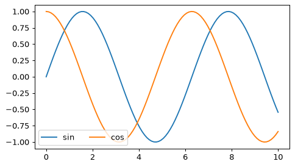
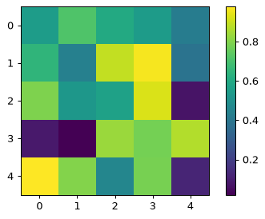

①
凡例の位置
loc / ncol
🎯 これだけ覚えればOK
ax.legend(loc='upper left', ncol=2, frameon=False)で、位置・列数・枠を変える。
import numpy as np import matplotlib.pyplot as plt x = np.linspace(0, 10, 100) fig, ax = plt.subplots() ax.plot(x, np.sin(x), label='sin') ax.plot(x, np.cos(x), label='cos') ax.legend(loc='lower left', ncol=2)

🍎 ひとことで
labelの無い線は、凡例に出ません。
🤔 答えられるかな？（クリックで答えが開く）
Q1. labelの無い線は？A. 凡例に載らない。
②
カラーバー
cmap
🎯 これだけ覚えればOK
fig.colorbar(im)で色と値の対応を表示。連続にはviridis、正負にはRdBu。
import numpy as np import matplotlib.pyplot as plt fig, ax = plt.subplots() im = ax.imshow(np.random.RandomState(0).rand(5, 5), cmap='viridis') fig.colorbar(im)

🍎 ひとことで
jetは誤解を招きやすいので避けましょう。
🤔 答えられるかな？（クリックで答えが開く）
Q1. 正負で0が中心のcmapは？A. RdBuなどの発散（diverging）型。